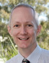

Prof. Michael Davies received his B.Sc. and D.Phil. from University of
York, UK. He worked at Brunel University and the University of York, before
moving to the Heart Research Institute, Sydney, Australia in 1995. He is
currently the Director of The Heart Research Institute, a conjoint professor
at The University of Sydney, a Fellow of the Royal Australian Chemical
Institute and an Australian Research Council Professorial Fellow.
He is currently President of the Society
for Free Radical Research – International, a past President of the Australasian
society and was previously a Vice-President of the International EPR Society.
He also serves the wider scientific
community as Editor-in-Chief of Free Radical Research, as an Editor of
Biochemical Journal and an Associate Editor of Photochemistry and Photobiology
as well as serving on a larger number of editorial boards.
His research is focussed on mechanisms
of protein modification by reactive species, the biological consequences
of such reactions, and the development of methods to quantify protein damage
in disease.
He has interests in reaction kinetics,
myeloperoxidase-derived oxidants, EPR spectroscopy, extracellular matrix
damage and the development of antioxidants. He is a world-leader and international
expert in the field of protein modification arising from oxidation reactions
(both radical and two-electron processes), and how this impacts on multiple
inflammatory diseases, with a particular emphasis on atherosclerosis.